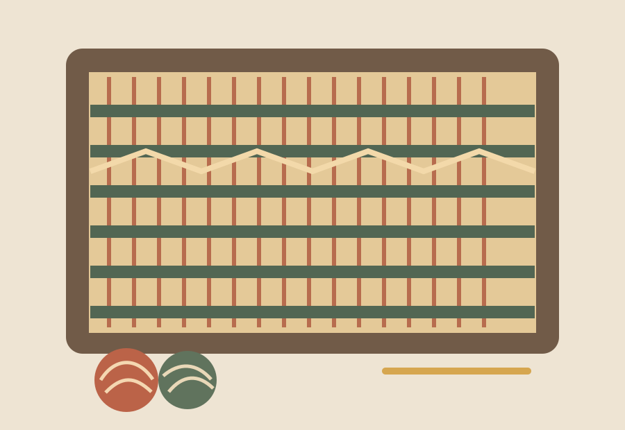

Maestra ceramista
María Quispe
Investiga engobes y formas utilitarias, combinando pruebas de esmalte con referencias del paisaje arequipeño.
Taller Andino Sur · Arequipa
Nuestro taller reúne distintas experiencias y oficios: compartir conocimientos también forma parte de cada pieza.
Los perfiles que siguen son personajes representativos creados para este proyecto académico; celebran la colaboración entre oficios.
Investiga engobes y formas utilitarias, combinando pruebas de esmalte con referencias del paisaje arequipeño.

Trabaja ensambles, restauración y diseño de mobiliario de pequeña escala.

Explora fibras, tintes y estructuras de telar para crear textiles resistentes.

Acompaña el modelado y el manejo de tiempos de secado y cocción.